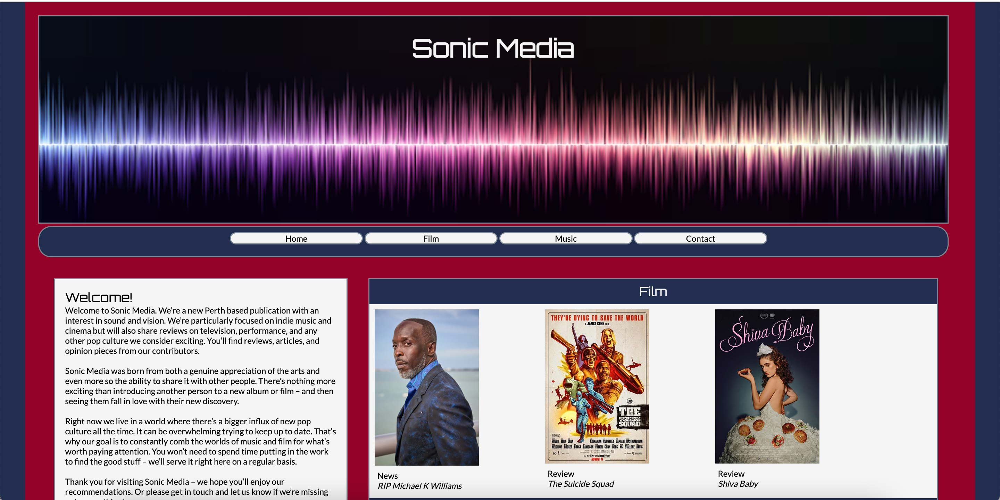

About
Hi, my name’s Cameron Scull, and I’m a writer and web developer. I began my career working in radio and media with a focus on copywriting – including advertising materials, website content, and online reviews. After Covid hit, and much like many others, I started considering a career change. This led to studying Certificate III, IV, and Diploma in Front End Website Development.
Throughout my studying, I have learnt HTML, CSS, PHP, and Javascript – as well as essential online subjects as UX/UI, accessibility, findability, and ethics. Studying these courses has also improved my ability to work autonomously, collaborate with team members and clients, and work both online and in person environments. I am particularly passionate about SEO as it combines my writing and web skills – and this is the direction I wish to follow in my career.
I consider myself a hard working and creative individual who is always open to a challenge. My focus is on learning new things and improving my skillset. While I’m particularly passionate for arts and culture – I always embrace the opportunity to promote new projects and clients with that same enthusiasm.
Outside of the working world, I spend time seeking out new films, books, and music. I love browsing art galleries, museums, and libraries. And when I’m not obsessing over pop culture, I’m spending time with my family, cats, and Chewie the dog.
Web
Throughout my time studying Website Development, I have developed two websites that I am particularly proud of. The first is a solo website called Sonic Media that I developed in Certificate IV. The second is a group project we created in Diploma for a client called the Citroen Collection.
Sonic Media (2021)

My aim for this project was to create a simple culture news and reviews website. I utilised HTML, CSS, JS, PHP, and Sass (in a later version). This was my first major project and while I would complete revise the layout of this website today, I still consider it a success for a beginner web developer. I’m currently considering relaunching this website in 2023.
Citroen Collection (2022)
This website was developed as a group project for a client during Diploma. We first created our own individual prototypes and mock-ups using Foundation and Sass – before presenting the mock-ups to our client. After deciding on the final design, my group built this website using Wordpress. My role in this project was often as a team leader and primarily within documentation, client management, and webpage creation. I’m proud of the work my team was able to develop for our client.
Writing

I first began writing as a personal interest in 2008. As an avid music fan, my writing was primarily based on reviewing my home music collection. This gained attention from local music websites including Spaceship News, FasterLouder, and music zine Lost In The Suburbz. For these clients I began professionally reviewing local gigs and album reviews.
I started studying radio in 2012 and joined a local station called Boom Radio. During this time I started creating website content including local news stories, pop culture articles and reviews. Soon I was employed as the station’s copywriter and wrote on air and online advertising for clients and promotional materials for the station including press releases.
After Boom Radio, I was employed as a copywriter by Gold Coast radio network Rebel Media. This was an exciting opportunity to challenge myself in another state – and I still write for this company in a freelance capacity.
Returning home in 2017, I have continued copywriting for Rebel Media as well as other clients including Redwave Media and Fringefeed. I’m looking forward to further writing opportunities in 2023.
Contact
Let's work together!
Check out my resume here.
If you'd like to chat with me or see further examples of my work - please contact me at...
Email: cameronscull@outlook.com